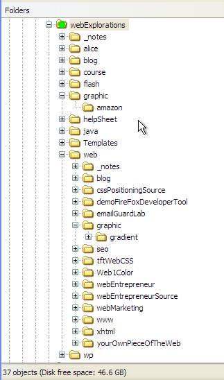

Here are the answers
Here are the correct responses.
If you got any wrong make sure you understand why so you don't make the same mistake in real life.

(1) What path statement would access the file myPhoto.gif in the graphic folder from the folder named webExplorations? (There's two graphic folders! Make sure you are referring to the first subfolder.)
graphic/myPhoto.gif
Explanation:
Starting from the current location,
go into the subfolder named graphic
(2) What path statement would access the file charlie.jpg in the graphic folder found in the folder named web?
web/graphic/charlie.jpg
Explanation:
Starting from the current location
go into the subfolder named web
then go into the subfolder named graphic
(3) Using Windows Explorer how would you determine what files are contained in the folder named tftWebCSS?
Click on the Folders button to open up both panes. Then click on the tftWebCSS folder to select it and display the files in the right pane.
(4) From the webExplorations folder what path would you use to access the gradient named blueRedGradient.jpg in the gradient folder?
/web/graphic/gradient/blueRedGradient.jpg
Explanation:
Starting from the current location,
go into the subfolder named web
from there go into the subfolder named graphic
from there go into the subfolder name gradient
(5) From the webExplorations folder what path would you use to access the file named logo.gif located in the same folder?
logo.gif
Explanation:
If the file is in the same folder as where you are, all you have to do is specify the name. The system will look in the current folder automatically.
As an alternative you could use the single dot:
./logo.gif
or, look in the current folder "." for the file named logo.gif
(6) What path statement would you use to access the file myLinkPage.html?
Who knows. We have to have a starting reference point. Are we located in the webExplorations folder or some other subfolder???
(7) From the webMarketing folder how would you access a graphic named ted.gif in the graphic folder of the web folder?
../graphic/ted.gif
Explanation:
Starting from the current location,
../ go up to the parent folder, webExplorations
/graphic and then back down into the subfolder of webExplorations named graphic.
(8) From the gradient folder how would you access a graphic named logo.gif located in the graphic subfolder of webExplorations?
../../../graphic/logo.gif
Explanation:
Starting from the current location,
../ go up to the parent folder, graphic, that the gradient folder is in,
../ then go up another parent to the web folder,
../ takes you up a third level putting you inside the webExplorations folder and all its subfolders (including "web").
Next go back down into the graphic subfolder of the webExplorations folder
*** *** ***
This completes this tutorial: Using Paths to locate files
Written by Peter K. Johnson - February 2009
Revised February 2010
Read my blog at: http://webexplorations.com/blog

This work is licensed under a Creative Commons Attribution-NonCommercial-ShareAlike 2.5 License.